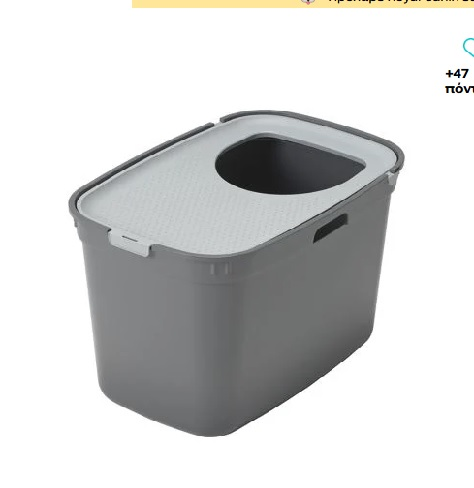
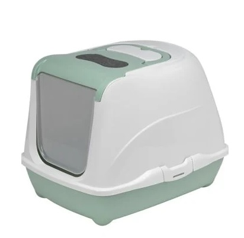
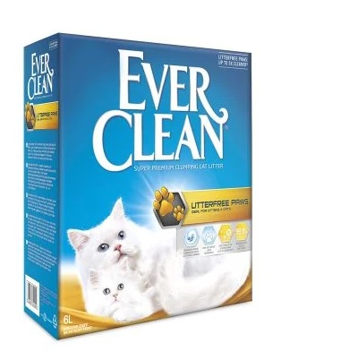
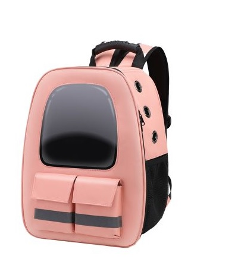
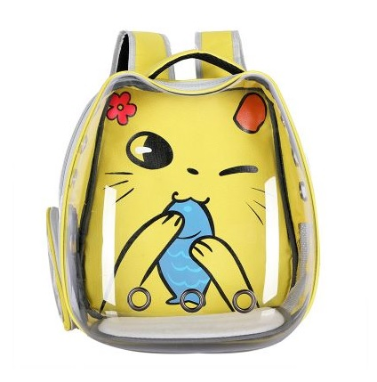
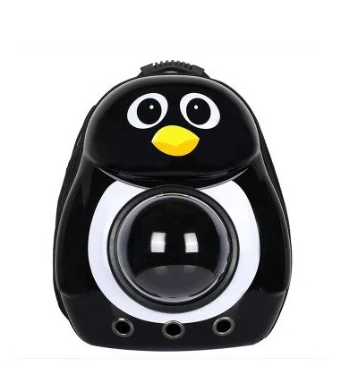

Χαρίστε στη γάτα σας την καθαριότητα
και τη φροντίδα που της αξίζει! Επιλέξτε
μέσα από ποιοτικά προϊόντα υγιεινής!
|
 Πρωτοποριακή, κλειστή τουαλέτα για τη γάτα σας. |
 Κλειστή τουαλέτα που προσφέρει ιδιωτικότητα |
 Συγκολλητική άμμος από λευκό μπετονίτη με άρωμα λεβάντας, |
|
 Τσάντα μεταφοράς για γατούλες.Η τσάντα αυτή προσφέρει στο |
 Τσάντα μεταφοράς με χαριτωμένο σχέδιο, |
 Τσάντα μεταφοράς με χαριτωμένο σχέδιο |